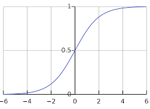
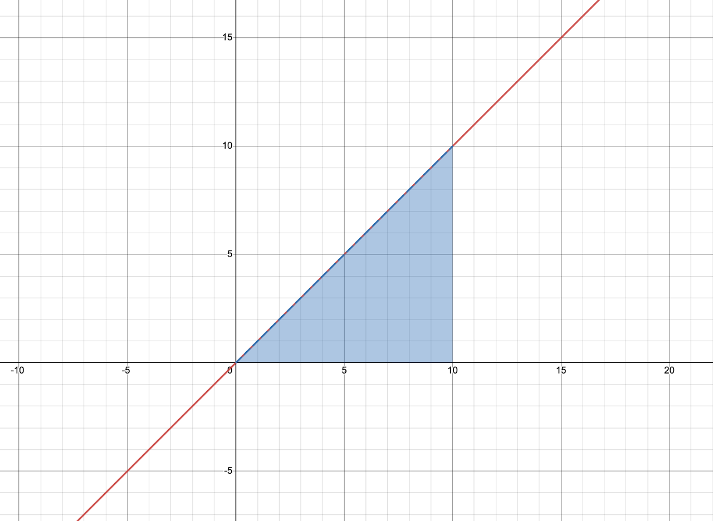

Previous: Theory 1 to 4
I like to think of theories 5 - 8 as the advanced theories, as they can be more complicated then the first 4 (especially t5), though 1 to 4 and 5 to 8 are grouped together in the guide, so I will do it as well. Except T8, I think it deserves it's own category.
Anyway, more theories to work through, some harder than others. Have fun!
Disclaimer: This is a simplified version of the guide. The guide will skip over things, and is not completely optimal. Click here for a more polished, in-depth, and optimal guide.
See each individual theory
If you are stuck for more then expected. Are you:
9k -> 9.4k -> 9.8k -> 10 -> 10.4 -> 10.6k -> 11k -> 12.4k (Skip T8) -> 13.4k -> 14k
Publications are equivalent to prestiges for ft, so don't be afraid to use them. For the majority of theories, the optimal pub multi is below 20, though it varies by theory the notable exception is t2, which has an optimal pub multi in the thousands
Each theory provides tau, equal to the maximum rho you have reached. Your total tau is the product of the tau from each theory. \(\tau = \tau_1 \times \tau_2...\)
Each theory has milestones which speed up progress. You can always respec milestones and shuffle them around, so you can experiment as much as you wish. Some milestones provide instant benefits, whilst others can take longer the bear fruit. Some milestones are stronger than others
You do not have to "complete" a theory to move on to the next one, nor do you have to stop a theory when you get all milestones. Play whichever theory is fastest
The milestone route is a list of distributions, from top to bottom. For example: 0/0/1/0, means you should buy 1 of the 3rd milestone from the top. Sometimes, buying milestones unlocks new ones, which can change what is shown. These are presented in a list.
Here is an example distribution: 0/1/0 -> 1/1/0/0 -> 0/0/3 -> 1/1/0/1 -> 1/1/3/1
This means you should start by buying the 2nd milestone, then get the first milestone, which unlocks the 4th milestone. Then, when you get 3 milestones, respec your milestones and put them in the 3rd milestone, later, you should respec those milestones out of the 3rd milestone and put them in the 1st, 2nd, and 4th milestones. Finally, the next 3 milestones should go into the 3rd milestone
There are some strategies that appear in many/all theories:
Doubling strats are strats where you hold off buying stepwise variables to save up for more powerful doubling variables, by only buying stepwise variables at 10x less than doubling variables. They will usually have a d after their name. For example: t1d is the doubling strat for t1 (used only in 0-1e25), where you buy the stepwise variables \(q_1\) and \(c_1\) only when they are 10x lower than the cheapest doubling variable (\(min(q_2, c_2)\)) in order to save up for them
Competing variables is when variables are added up. This means that the lower variable is "weaker" than the higher variable, because increasing it has less of an affect. Take this example: \(\dot{ρ} = c_1 + c_2\), where \(c_1\) and \(c_2\) are both doubling variables. If \(c_1 = 10\), and \(c_2 = 1\) million, obviously, increasing \(c_1\) to something like 20, even though it's being doubled, has not much of an affect. Therefore, one should not buy \(c_1\)
Note that even though these levels of activeness are given, it is almost always to play a new theory a good amount (~1e100 tau) although if you don't reach that when you unlock the next theory MOVE ON
It as always best to use the theory simulator to find out what theory to push.
For info on the thoery sim read here
T5 is based off of a logistic function. A logistic function is a function that grows slowly at the start, speeds up, and then slows down again as it converges to some value, called it's "cap". below is the graph of a logistic function. When the value of the logistic function is far below the cap, the growth is exponential, and then as it approaches the cap is slows down exponentially, never quite reaching it
\(\dot{\rho} = q_1q_2q\)
\(\dot{q} = (\frac{c_1}{c_2})q(1 - \frac{q}{c_2})\)
After \(c_3\) unlock
\(\dot{q} = (\frac{c_1}{c_2})q(c_3 - \frac{q}{c_2})\)
This first section is a simple equation. Increase \(q_1\), \(q_2\), and \(q\) to increase \(\rho\). The interesting part of these equations is the \(\dot{q} = (\frac{c_1}{c_2})q(c_3 - \frac{q}{c_2})\) part. This part can be split into 3 sections that are multiplied together:
From this one can understand what each variable does, and how q works:
q increases slowly, then speeds up until it reaches (about) half it's cap and then slows down as it approaches it's cap, never surpassing it.
T5 is also the second fastest theory in endgame
Written by Playspout
Think of buying \(c_1\) as throttling on the bicycle faster. Buying \(c_2\) is similar to shifting the bicycle gear up by 1 gear. If all we do is buy \(c_1\) and never \(c_2\), then we’re stuck in gear 1 forever and make no progress. However, if all we do is buy \(c_2\) and never \(c_1\), then this is similar to trying to ride from highest gear from 0 speed, which we know takes a long time and a lot of effort. Therefore using the bicycle analogy, we should buy \(c_2\) only when we have the speed to support it; not too early and not too late. Furthermore, later in the publication, we should buy only 1 level of \(c_2\) at a time. We should buy \(c_1\) only right after buying \(c_2\) (shifting up gear).When deciding when to buy \(c_1\), \(c_2\), think of \(c_1\) as throttling a bicycle, and \(c_2\) as shifting up gear by 1 level.
t1's pub multi has no best fit, as it fluctuates a lot, but here is known:
Because of the drawbacks of \(c_2\), T5 benefits the most from active play. Manual \(c_2\) buying is almost mandatory when doing T5
Warning: do NOT overnight this theory. It has terrible decay past a good pub multi, and will not give good results.
All strategies revolve around increasing q as fast as possible, with doubling strats for \(q_{12}\). Before learning strats one must understand manual \(c_2\) buying during recovery
Remember to untick \(c_2\) autobuy at the end of a publication before you click publish!
This strategy is NOT recommended, and may cause this section to last longer than expected
You can set your buy amount to xmax instead of x1 or x10. This means that after every \(c_2\) purchase, the downside of \(c_2\) will cause q to not move for a while. For this strategy, instead of spamming \(c_2\) buy a round of it. Wait a while and buy it again. This means you could almost semi-idle it, buy not quite, as it is still pretty active (check every minute)
After manual buying \(c_2\) there are different strategies for what you do after. This strategies are seperated by activity. T5AI is active, T5 idle is (slightly confusingly) semi-idle, and T5 is idle
| \(q_1\) | Buy at 15% of \(min(q_2 cost, c_2 cost, c_3 cost)\) |
| \(q_2\) | Always buy |
| \(c_1\) | Buy at 15% of \(min(q_2 cost, c_2 cost, c_3 cost)\) IF AND ONLY IF q is not capped |
| \(c_2\) | Always buy |
| \(c_3\) | Always buy |
| var | Before xexxx \(\rho\) | After xexxx \(\rho\) |
|---|---|---|
| \(q_1\) | Always buy | Always buy |
| \(q_2\) | Always buy | Always buy |
| \(c_1\) | Always buy | Never buy |
| \(c_2\) | Always buy | Always buy |
| \(c_3\) | Always buy | Always buy |
The value xexxx is found in the theory simulator. If not using the theory sim it is usually 10x higher then the last pub poin, i.e. if you published at 1e100 then stop buying \(c_1\) at 1e101
Full Autobuy
T6 is based on the idea of a definite integral. A definite integral finds the area under the graph of an equation from 2 points. Before a new dimension is bought, it's finding the area under the graph of a 2d expression (q, f(q)), after it is bought, the graph moves into 3d (q, r, f(q,r)).
For example, let's take the equation f(x) = x. The graph f(x) = x is just a line. The area under the line from 0 to 10 is shown below. The integral from 0 to 10 of f(x) is the shaded area in the diagram. That is what an integral is. This can be calculated as a triangle, but there are other methods.
Using said other methods, T6's equation can be simplified to the following (remove any terms containing not unlocked variables):
\(\rho = c_1c_2q + \frac{1}{2}c_3q^2 + \frac{1}{3}c_4q^3 - C\)
\(\dot{\rho} = c_1c_2\dot{q} + c_3q\dot{q} + c_4q^2\dot{q}\)
Or after the new dimension milestone
\(\rho = c_1c_2qr + \frac{1}{2}c_3q^2r + \frac{1}{3}c_4q^3r + \frac{1}{2}c_5qr^2 - C\)
\(\dot{\rho} = c_1c_2(q\dot{r} + r\dot{q}) + \frac{1}{2}c_3(q^2\dot{r} + 2qr\dot{q}) + \frac{1}{3}c_4(q^3\dot{r} + 3q^2r\dot{q}) + \frac{1}{2}c_5(2qr\dot{r} + r^2\dot{q})\)
The -C part can be ignored, it's just there to decrease \(\rho\) when you buy an upgrade.
6 - 12
Like T4, the strategies change due to variable competition and different variable taking over
*note the before 1e7 you will have to buy \(c_{12}\) because you can't afford \(c_3\)
** note that before 1e25 you will have to buy \(c_3\) because you cannot afford \(c_4\)
There is a more difficult strategy pot 1e200 called T6AI. However to simplify, I have a strategy I call T6AInoMod (renamed) or T6C5dC12rcv using descriptive names. Because it is not in the guide The sim will not recommend this strat, and people may not know it.
For the relevant idle strategy, simply autobuy all variables that are not listed as "Never Buy"
| \(q_1\) | Buy at 10x less then \(min(q_2 cost, c_3 cost)\) |
| \(q_2\) | Always buy |
| \(c_1\) | Never buy |
| \(c_2\) | Never buy |
| \(c_3\) | Always buy |
| \(q_1\) | Buy at 10x less then \(min(q_2 cost, c_4 cost)\) |
| \(q_2\) | Always buy |
| \(c_1\) | Never buy |
| \(c_2\) | Never buy |
| \(c_3\) | Never buy |
| \(c_4\) | Always buy |
| \(q_1\) | Buy at 10x less then \(min(q_2 cost, c_2 cost)\) |
| \(q_2\) | Always buy |
| \(c_1\) | Buy at 10x less then \(min(q_2 cost, c_2 cost)\) |
| \(c_2\) | Always buy |
| \(c_3\) | Never buy |
| \(c_4\) | Never buy |
| \(c_5\) | Always buy |
| \(q_1\) | Buy at 10x less then \(min(q_2 cost, c_2 cost)\) |
| \(q_2\) | Always buy |
| \(c_1\) | Buy at 10x less then \(min(q_2 cost, c_2 cost)\) |
| \(c_2\) | Always buy |
| \(c_3\) | Never buy |
| \(c_4\) | Never buy |
| \(c_5\) | Never buy |
| var | Recovery | Tau gain |
|---|---|---|
| \(q_1\) | Buy at 10x less then \(min(q_2 cost, c_2 cost)\) | Buy at 10x less then \(min(q_2 cost, c_2 cost)\) |
| \(q_2\) | Always buy | Always buy |
| \(c_1\) | Buy at 10x less then \(min(q_2 cost, c_2 cost)\) | Never buy |
| \(c_2\) | Always buy | Never buy |
| \(c_3\) | Never buy | Never buy |
| \(c_4\) | Never buy | Never buy |
| \(c_5\) | Never buy | Always buy |
I have recently learnt how T7 works (thankyou megaminX and 3b1b), and it's really freaking complicated.
This part is not simple at all. You don't have to read all this, you can just skip to the strategies
The function \(g(\rho_1, \rho_2)\) is a function that maps every point in \(\rho_1, \rho_2\) space to a number. You can imagine each point in \(\rho_1, rho_2\) space, raised to that number. So for example, if g(1,1) = 2, then the point 1, 1 would be raised 2 units up in the 3rd dimension. This create a surface in the 3rd dimension, a sort of 2d terrain if you will.
the \(\nabla\) is the del operator. It is the gradient of the function. You can imagine it like this: Imagine you are standing on a point. You look around and you see the terrain around you, and the gradient of the function tell you which way is uphill. Is it in the positive x direction? negative y? Some other direction? And it tells you how steep it is. Is it a cliff? or only a gentle incline.
This information is given as a vector. You can this of a vector as an arrow which is in the same spot you are, pointing uphill, and the bigger the arrow the steeper it is.
and finally we have the equation \(\dot{\rho} = q \nabla g\). This means you look in the direction the arrow is pointing and start walking. Your speed depends on q and the size of the vector \(\nabla\) g. As you walk you constantly make adjustments to your speed and directing based on the the value of \(\nabla\) g is at you new point.
A vector can be split up into x and y components, meaning if you walk in the direction of the vector, from the start of the arrow to the end of the arrow, you will have moved the vectors x component in the x direction, and the vectors y component in the y direction. In our case, we split it into \(\rho_1\) and \(\rho_2\) components
This is an example of a maximisation algorithm. It moves you to a local maximum, a point where the graph is highest, as you will always move upwards
From now on I will only use \(\rho_1\), \(\rho_2\) coordinates, not x and y.
\(\rho\) is the point \(\rho_1\), \(\rho_2\), and we will still use "you" as the thing that moving. Just remember it's actually \(\rho\)
In this example your goal is to maximise \(\rho_1\), to be as far away from the origin in the \(\rho_1\) direction. To do this you want to increase both q and the \(\rho_1\) component of \(\nabla\) g. To do this you want to be facing the steepest incline you can facing to the \(\rho_1\) direction
So, block out the \(\rho_2\) direction. You are now on a line. What you want is that when moving forwards, you find yourself moving up a very, very steep incline, the steepest you can get. To find this incline you can use differentiation (slightly different from how T2 uses it, here the derivative of a function is it's gradient). This allows you to look at a function and a point along the function and can find the gradient at a point.
Right now, we are not moving along \(\rho_2\), so we can treat \(\rho_2\) as a constant. This means that at least in our limited view, \(g(\rho_1, \rho_2)\) is just g(\(\rho_1\)). So we take the derivative of g with respect to \(\rho_1\) and we have the \(\rho_1\) direction of our \(\nabla\) g vector!
We can do the same thing for \(\rho_2\) to find the \(\rho_2\) component.
Assumed knowledge: Basic understanding of vectors and differentiation
The \(\nabla\) operator is a way of taking the derivative of a multi-variable function. The function \(\nabla\)g is a function that takes in the 2 initial arguments \(\rho_1\) and \(\rho_2\) and returns a vector. As shown before this vector is found by looking at each argument individually and treating the others as constants. Thus you have the vector \(\begin{bmatrix}dg/d\rho_1\\dg/d\rho_2\end{bmatrix}\).
So finally, here are the simplified equations:
\(g(\rho_1, \rho_2) = c_1c_2\rho_1 + c_3\rho_1^{1.5} + c_4\rho_2 + c_5\rho_2^{1.5} + c_6\rho_1^{0.5}\rho_2^{0.5} \)
\(\dot{\rho_1} = c_1c_2 + 1.5c_3\rho_1^{0.5} + c_6\rho_2^{0.5} / 2\rho_1^{0.5} \)
\(\dot{\rho_2} = c_4 + 1.5c_5\rho_2^{0.5} + c_6\rho_1^{0.5} / 2\rho_2^{0.5} \)
2 - 3
Despite the complexity of T7. The strategies for T7 are just standard doubling strats. with competing variables.
for idle strats simple autobuy all variables not listed as "Never Buy". The Corresponding idle strat to T7PlaySpqcayX is T7noC12
| \(q_1\) | When \(\frac{1}{10}\) of \(c_2\) cost |
| \(c_1\) | When \(\frac{1}{10}\) of \(c_2\) cost |
| \(c_2\) | Always buy |
| \(c_3\) | Never buy |
| \(c_4\) | Never buy |
| \(c_5\) | Never buy |
| \(c_6\) | Never buy |
| \(q_1\) | When \(\frac{1}{10}\) of \(c_3\) cost |
| \(c_1\) | Never buy |
| \(c_2\) | Never buy |
| \(c_3\) | Always buy |
| \(c_4\) | Never buy |
| \(c_5\) | Never buy |
| \(c_6\) | Never buy |
| \(q_1\) | When \(\frac{1}{4}\) of \(c_6\) cost |
| \(c_1\) | When \(\frac{1}{4}\) of \(c_2\) cost |
| \(c_2\) | When \(\frac{1}{X}\) of \(c_6\) cost |
| \(c_3\) | When \(\frac{1}{10}\) of \(c_6\) cost |
| \(c_4\) | When \(\frac{1}{10}\) of \(c_6\) cost |
| \(c_5\) | When \(\frac{1}{4}\) of \(c_6\) cost |
| \(c_6\) | Always buy |
Note that a higher X not only directly affects c2 buying but also indirectly affect c1 buying through c2
If there is no X, treat it as infinity, that is to use the following chart:
| \(q_1\) | When \(\frac{1}{4}\) of \(c_6\) cost |
| \(c_1\) | Never buy |
| \(c_2\) | Never buy |
| \(c_3\) | When \(\frac{1}{10}\) of \(c_6\) cost |
| \(c_4\) | When \(\frac{1}{10}\) of \(c_6\) cost |
| \(c_5\) | When \(\frac{1}{4}\) of \(c_6\) cost |
| \(c_6\) | Always buy |
Note that the corresponding idle strat to T7PlaySpqcey is called T7noC12 by the theory sim
T8 is very slow before 1e60, and is thus the ONLY theory where the tau it provides it outweighed by the phi that the 5 students would provide. Don't worry, you will still buy T8, just at 14k instead of 12k.
When T8 is bought, it unlocks another student upgrade: R9, as it is the ninth from the top. When you have 14k, you will be able to afford both T8 and R9. R9 boosts theory speed, and makes them faster, meaning T8 is worth it
When you reach 12k, buy T8, swap to it, and then sell it, so you can get the achievement and the 100k stars that come with it. Also, you will be able to see R9 (but not buy it)
As you push for 14k, you should not only focus on T7. The optimal theory distribution looks like this, so try to focus on theories that are lacking:
For overnighting use T2 until 1e350 T2 then T6. If your T6 is very high you can start moving to T4
If your numbers are slightly different that's fine. You just need about e1350 total tau to get to 14k.
For strats, please go back to the relevant sections
Next: Theory 8 and R9